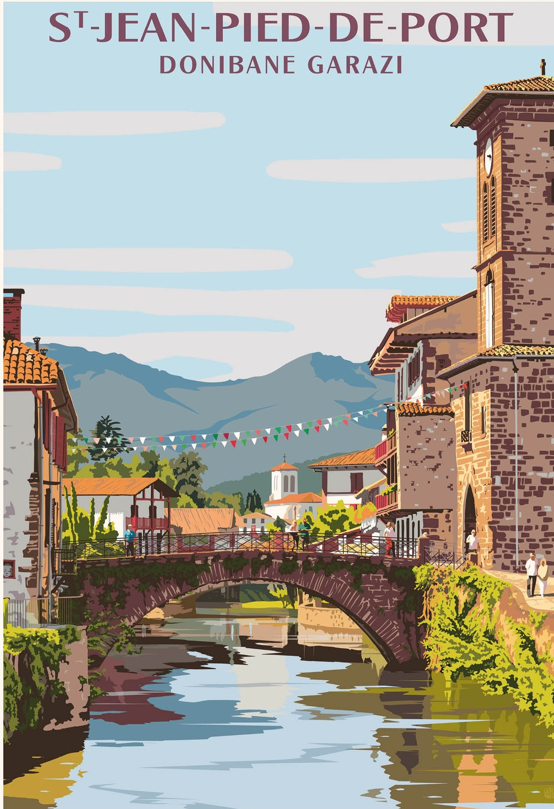

Diferentes tours adaptados a tus vacaciones


Querés organizar tu viaje, pero no sabes cómo ni por dónde empezar? Té
gustaría hacer un viaje aventura! Algo de cicloturismo, senderismo o sos
de los que prefieren algo más tranquilo y disfrutar de un tour
gastronómico en las diferentes ciudades vascas.
El País Vasco se compone de 4 provincias del lado sur, y 3 provincias
del lado norte. El sentido de pertenencia y lucha siempre está presente,
en su cultura, en su lenguaje, y en sus fuertes convicciones.